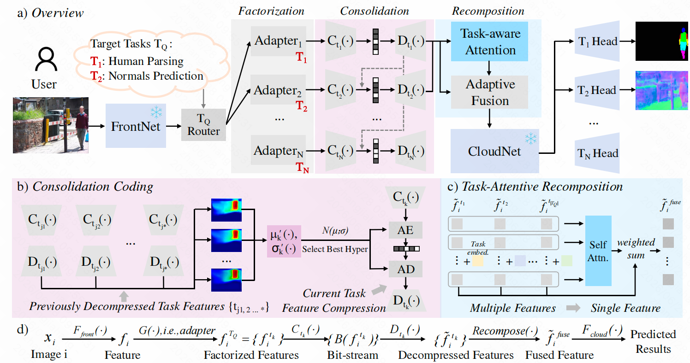
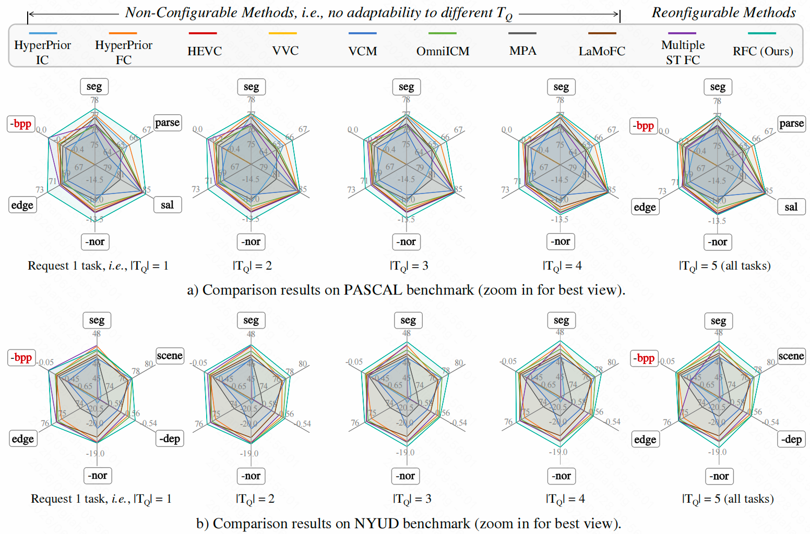
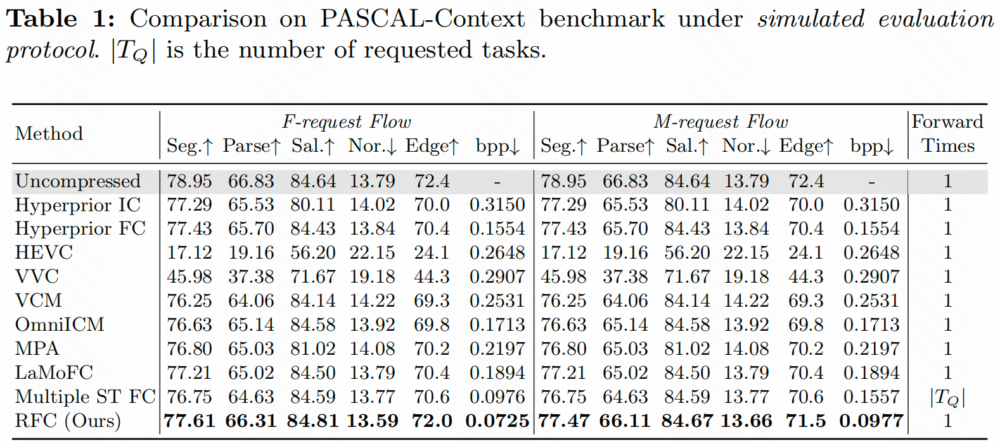
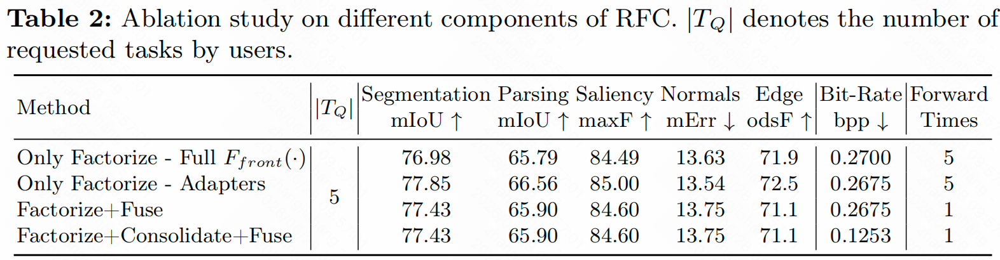

Towards Reconfigurable Visual Feature Compression
Abstract
Recently, vision foundation models (VFMs) have demonstrated strong power for versatile downstream task analysis. This paper starts from the problem of how to efficiently deploy VFMs at the cloud to support various user requests with arbitrary multi-task combinations that end in any scalable fashion. To achieve feature data transmission between frontend-cloud, traditional feature coding employs the direct compression-reconstruction paradigm. However, this can result in potential redundancy: task-irrelevant information and repeated coding of cross-task shared knowledge, leading to an inflexible and redundant scheme.
To this end, we propose a novel feature coding paradigm, termed reconfigurable multi-task feature compression, which aims to efficiently and adaptively compress the intermediate features to support the requested targeted tasks. Correspondingly, we propose a unified Reconfigurable Feature Compression framework, RFC, by feature factorization and recomposition. Specifically, the original feature is first factorized into multiple task-specific features with light-weight adapters. Then, to efficiently compress these separate features, we consolidate them in a task-conditional auto-regressive manner, leveraging previously encoded task features as hyperprior conditions to reduce the redundancy of shared information in the current task feature. At the cloud side, a task-attentive recomposition module is further developed to fulfill the multi-task inference power within a single forward pass. Finally, we construct a comprehensive benchmark of reconfigurable feature compression to verify the effectiveness of RFC.
Method
RFC follows a unified factorization-consolidation-recomposition pipeline for arbitrary target task subsets. The front end uses task-specific adapters to remove task-irrelevant information, the entropy model consolidates cross-task shared knowledge with auto-regressive hyperprior conditioning, and the cloud side recomposes selected task features with task-attentive fusion.
1. Factorization
Adapter-based information bottlenecks obtain atomic task-specific feature components.
2. Consolidation
Task auto-regressive hyperprior coding reduces shared redundancy among requested tasks.
3. Recomposition
Task-attentive fusion recomposes selected features for single-forward multi-task inference.

Quantitative Results
RFC is evaluated with comprehensive overall and simulated protocols.
(1) Compared to traditional non-configurable methods, RFC can organize the bit-stream on-demand. (2) In addition to the strong and flexible adaptation capacity, RFC can still perform well when requesting all tasks. (3) Compared with another naive reconfigurable method (Multiple ST FC), RFC retains the native efficiency of VFMs, i.e., single forward for inference of multiple tasks. (4) For more practical simulation protocol, RFC demonstrates significant advantages over other methods.


Key ablation studies on our designs.

BibTeX
@inproceedings{zhang2026towards,
title = {Towards Reconfigurable Visual Feature Compression},
author = {Zhang, Jiahang and Yang, Wenhan and Liu, Minghao and Liu, Jiaying},
booktitle = {European Conference on Computer Vision (ECCV)},
year = {2026}
}